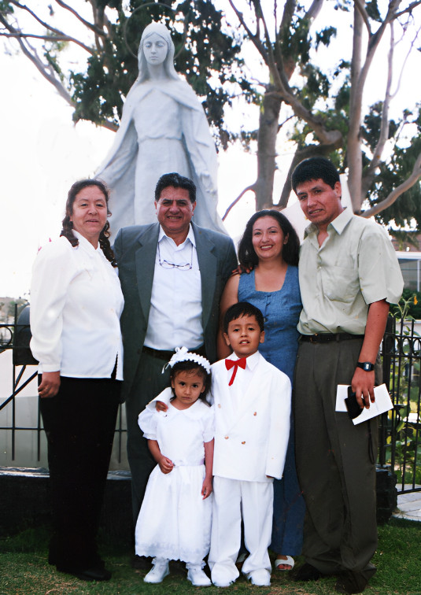

En el recorrido de toda familia, hay personas que dejan una huella única, especial. Esas que con su sola presencia se vuelven parte esencial del día a día, del bienestar y del futuro de todos los que tienen la suerte de tenerlas cerca. Para mi familia, una de esas personas es, sin duda, Don Wilder, o “Wildercito”, como le decimos con cariño quienes lo conocemos bien.
Wilder ha sido –y sigue siendo– una figura clave en nuestra historia familiar. No solo estuvo en los momentos importantes, sino que su influencia se arraigó en lo más profundo de nuestros cimientos. Siempre estuvo ahí, firme, constante, dándonos su apoyo cuando las cosas se complicaban. En esos momentos difíciles, sus consejos y su forma serena de ver la vida fueron como una brújula para nosotros, ayudándonos a mantenernos unidos y salir adelante.

Pero su legado va más allá de haber sido un sostén en tiempos complicados. Wilder ha sido un verdadero maestro silencioso, alguien que con su ejemplo nos enseñó muchísimo. Nos mostró, por ejemplo, cómo darle valor a cada centavo ganado, cómo ahorrar con inteligencia y sin que eso se sintiera como un sacrificio, sino como una forma de asegurar el bienestar de todos. Esas enseñanzas no se nos han olvidado; al contrario, se han convertido en parte de nuestra forma de vivir y de ver el mundo.
Además, su visión para los negocios, su espíritu emprendedor, siempre nos han inspirado. Ver cómo con esfuerzo y constancia ha logrado construir tanto, nos ha enseñado que sí se puede, que con disciplina y dedicación se puede llegar lejos. Ha sembrado en nosotros esa ambición sana de superarnos y perseguir metas con sentido.
Y aunque todo eso ya sería suficiente para admirarlo, lo más valioso de Wilder está en lo humano: en su papel como papá, como amigo, como esa persona con la que puedes contar sin condiciones. Su forma de ser, de escuchar, de estar, ha sido una verdadera guía para mí, especialmente en mi rol como padre. Muchas de las cosas que hoy les transmito a mis hijos las aprendí trabajando con él en el “Super” o en aquellos viajes y temporadas que compartimos en Chachapoyas y Lima.
Hoy, al mirar lo que hemos construido, al ver que gran parte de lo que tenemos como familia se sostiene sobre las bases que él nos ayudó a formar, no puedo hacer otra cosa que agradecer. Este pequeño reconocimiento no busca otra cosa que honrar su presencia y decirle, mientras aún lo tenemos con nosotros: gracias, de corazón.
Y tampoco puedo dejar de mencionar a Doña Martita y Don Leo, sus padres. Ellos son la raíz de ese árbol generoso que es Wilder. Conocerlos, escucharlos, fue entender de dónde viene tanta bondad y fuerza. Me encantaría en algún momento poder compartir algunas historias de Don Leo, porque también tienen mucho valor.
Este mensaje es un homenaje a ese legado familiar que ojalá siga creciendo, pasando de generación en generación. Gracias, por todo Wilder. Que Dios te bendiga siempre.